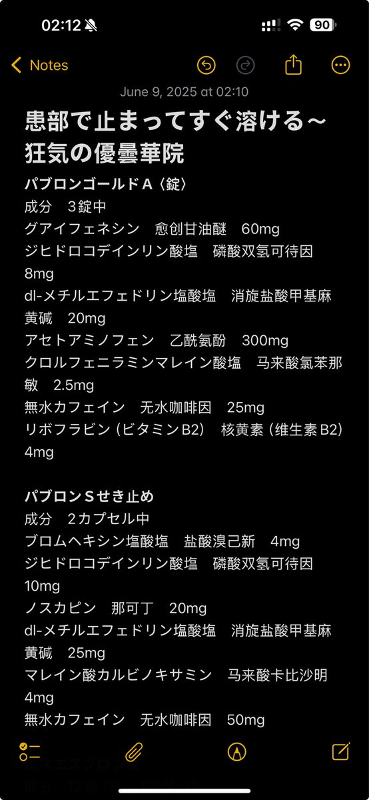
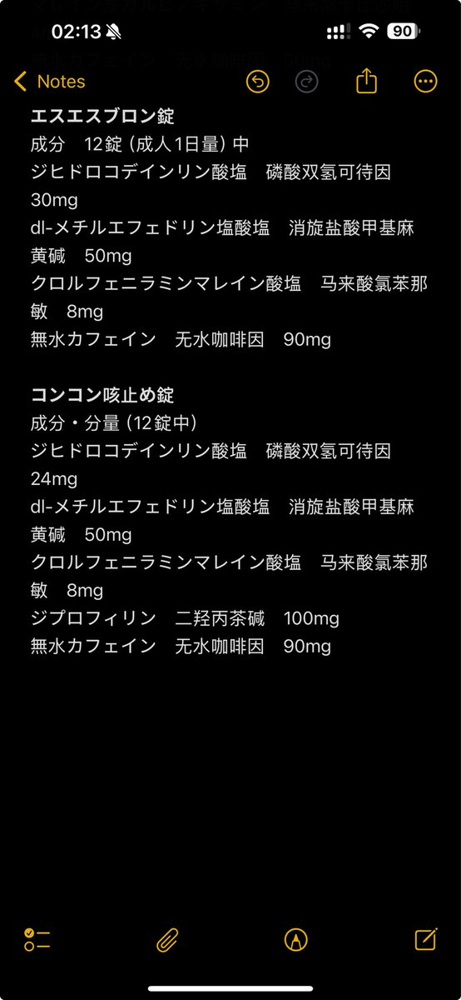

小虚空🍥
@tokerumaisurii
唉没钱买白兔了再买一罐连饭都吃不起了，家里也没有剩的免费的酒可以喝了，普瑞巴林稍微便宜点但又很难买，什么也用不了，也不好意思主动要钱，但是机厅的币只要买了就是免费的，我还是继续打舞萌吧……


小虚空🍥
@tokerumaisurii
哎呀我操发现你们樱花妹真的是精明啊，好奇对比了几款白兔类药物之后发现，“正宗”白兔（エスエスブロン錠）的每毫克磷酸双氢可待因对应其余物质毫克数正好是同类中最少的，樱花妹，你们真的很会挑，，， https://t.co/3Iju9YnnKz